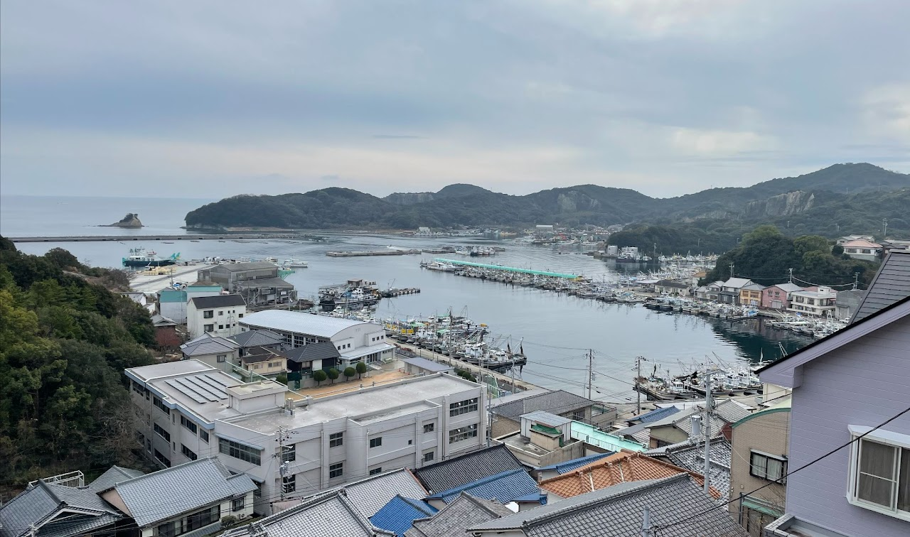

家島諸島の話
島を訪れる、それも観光地化されたエンターテイメントの箱庭ではなく、舟と共に生活する人々を訪ねる、というのは近頃思い描いてきた夢であったので、瀬戸内海にある家島諸島を知ったとき、必ずここに行こうと思った。この群島は姫路港から南に定期船で三十分ほどの場所にある。私はJR姫路駅を降りたあと、お城とは反対の南に進むバスに乗って港へと向かった。あいにくの曇天で、姫路城も空の色と合い混ざって、白鷺というよりむしろ、灰色の雰囲気を纏っていた。
港に着くと、ちょうど小豆島行きの船が出港するところであった。一階が船券売り場になっているビルのロビーは薄暗く、人が二、三人出たり入ったりしていた。家島諸島を構成する島々のうち、姫路から船が出ているのは家島、坊勢島、男鹿島の三つ。今回はまず家島に向かうことにした。片道千円だが、学生は半額割引の五百円で利用できる。観光地の小豆島へ向かう船は、車も積み込める大きなフェリーだが、家島行きの定期船はそれに比べると小さく、最大で五十人弱乗り込める程度のものであった。
眠っているうちに島に着いた。時刻は10時半。船着場の周辺を見渡すと、郵便局など島外との連絡を要する建物が存在し、人の行き来も盛んな様子であった。お昼時に到着した場合は喫茶店に入って時間を潰すことも考えていたが、昼ごはんにはまだ早いので、とりあえず海岸線に沿って歩いてみることにした。
いかにも雨が降りそうな天気だが、水面はいたって穏やかだった。三好達治の詩に『郷愁』という作品があり、以下のようにうたわれる。
蝶のやうな私の郷愁！……。蝶はいくつか籬(まがき)を越え、午後の街角に海を見る……。私は壁に海を聴く……。私は本を閉ぢる。私は壁に凭(もた)れる。隣りの部屋で二時が打つ。「海、遠い海よ！と私は紙にしたためる。——海よ、僕らの使ふ文字では、お前の中に母がゐる。そして母よ、仏蘭西人の言葉では、あなたの中に海がある。
高校で合唱を教わった音楽の先生は、この海とは太平洋や日本海というよりは、瀬戸内のような海であると述べていたが、家島から眺める瀬戸内は、詩がうたうにふさわしい、小さく整っていて、それでいてそこに住む人を優しく包み込む無限の広さを持った海だった。ふとしたカーブから見える海と人工物とのコントラストもまた綺麗である。
家島神社は、住宅街から少し歩いたところにある。鳥居が海岸沿いに配置され、そこから崖を一気に登ると社殿をお目にかけることができる。とても立派な佇まいの神社だった。
神社を参拝して辺りを散策していると、雨が降ってきた。すでに市街地から遠いところまで来てしまっており、濡れるのを我慢して歩くしかない。と、横を通りかかった車が止まり、おじさんが話しかけてくる。雨の中あきらかに島民が普段行かないところを歩く若者を不憫に思い、車に乗せてくれたのである。ヒッチハイク成功！車内では島の人口構成や歴史などを聞かせてもらい、昔は漁業や海運で栄えていたこと、地区の合併騒動のこと、今は住民が減りつつあることなどを知ることができた。さらに、観光に来たならば他の島も訪れるべき、と島のちょうど反対側にある船着場まで送ってくれた。その波止場でも渡し船の乗り方を同乗者に丁寧に教えてもらうなどし、島民の方々の優しさに触れた。
おじさんのアドバイスにしたがって坊勢島に向かうことにした。こちらの島は漁業が盛んとのことで、家島本島よりも多くの漁船を目にすることができた。お昼は島の中華屋さんでいただいた。店内はスーツ姿の男性陣や近くの工事現場で働く人たちなどで賑わっていた。
島の斜面にびっしりと家や学校、小さなビルが建ち並ぶ。丘の上にのぼって辺りを見渡すと、その様子がはっきりと確認できた。お昼をちょうど過ぎたころで、小学校からチャイムの音が聞こえてくる。

もうだいぶ島を見尽くした気分でいたのだが、姫路への帰りの船が来るまで1時間ほどあったので、再び海岸線に沿ってぶらぶらすることにした。この頃になると離島の海岸の曲がり具合なども理解し始めて、A点からB点まで移動するのに地図上の直線距離で見積もるよりも2倍ほど時間がかかることを会得した。また、バイクで移動する住民が多数見られたことは、学びであった。
さて、私が家島諸島を訪れたきっかけをもう少し掘り下げるために、少し話題が変わるのをお許しいただきたいのだが、私は高校までいわゆる大学街に住んでいた。20歳程度の若者が常に流入するので、駅の周辺は曜日を問わず活気に溢れていたのを覚えている。
ところが、実はそういった客観的な評価が私の中で成立したのは、中学に入って地元を出たときである。そこで初めて、私の住む場所が「学生の街」とか「飲食店が乱立する地域」のように周りから認識されていることを知ったのである。それまで私は、自分が住む街や、自分の人生の一部をそこで過ごしたという事実は、特筆すべきことのない、凡庸なものであるように考えていた。中学に入って慣れ親しんだ土地を離れ、他者から観た自分の街を提示されるにいたって初めて、そこに住むという行為にストーリー性が芽生えるのを感じたのである。
これの意味するところを説明するために、もう一つ別の話題を持ち出すことをお許しいただきたい。私が小学生のとき読んでいた漫画に、荒川弘先生の『銀の匙 Silver Spoon』がある。北海道の農業高校を舞台とし、札幌の中学からやってきて、高校で農業や馬術に初めて触れる主人公の生活が具体的に描かれる。さて、北海道の農業高校に通われていた方々や、農業に近いところで生活を営まれてきた方々を除いて、例えば私のように都心部で一生を過ごしてきた読者の皆さんは、「北海道の農業高校」と聞くだけで、もはやそこにストーリーが芽生えるのを感じるのではないだろうか。授業でこんなことを学んで、部活でこんなことをして、といった具体的なものでなくとも、「北海道の農業高校で寮生活しているということ」そのものに、いってみればそのコンセプトを聴いただけで、お話が書けてしまうような感覚が私にはある。
端的に言えば、瀬戸内海の離島にも同じようなものを感じてしまったのである。もう半年以上前のことで具体的にどのような小説を読んだとか映画を見たとかいったことは忘れたが、何かをきっかけとして私は瀬戸内の離島での生活にストーリー性を発見した。
そこで私がとった行動とは、ここまで記事を読まれた皆さんならご存知の通り、実際にそこに行ってみるということであった。その場所を訪れることで、何を感じ取るだろうか？そこで見たもの聞いたことは、私がメディア等を通して私の中に形成したストーリーと一致するものだっただろうか？その問いに対する答えはかなり個人的なものなのでここであらわに書くことはしないが、これを読まれている皆さんにも似たような経験はないでしょうか、という疑問提起をしてこの話の締めくくりとしたい。